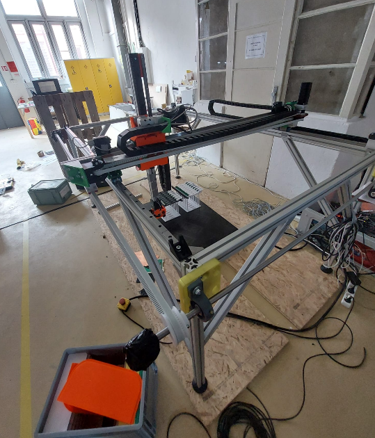
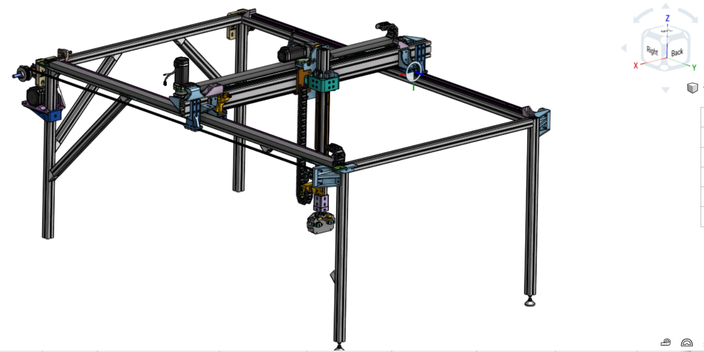
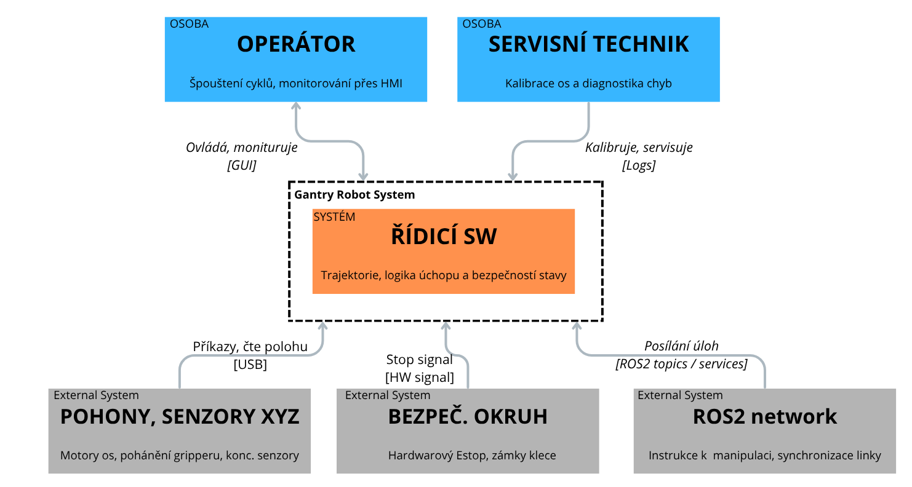
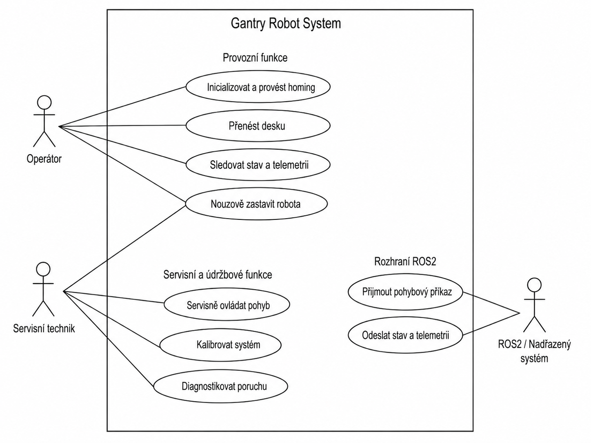
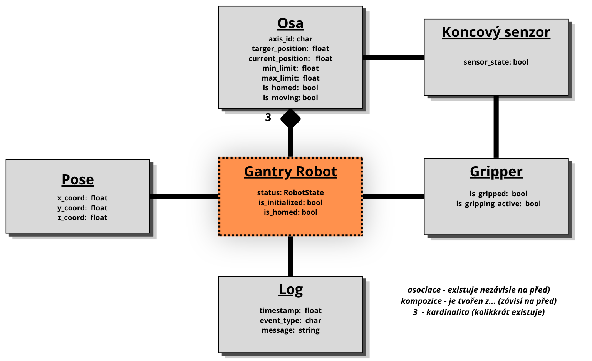
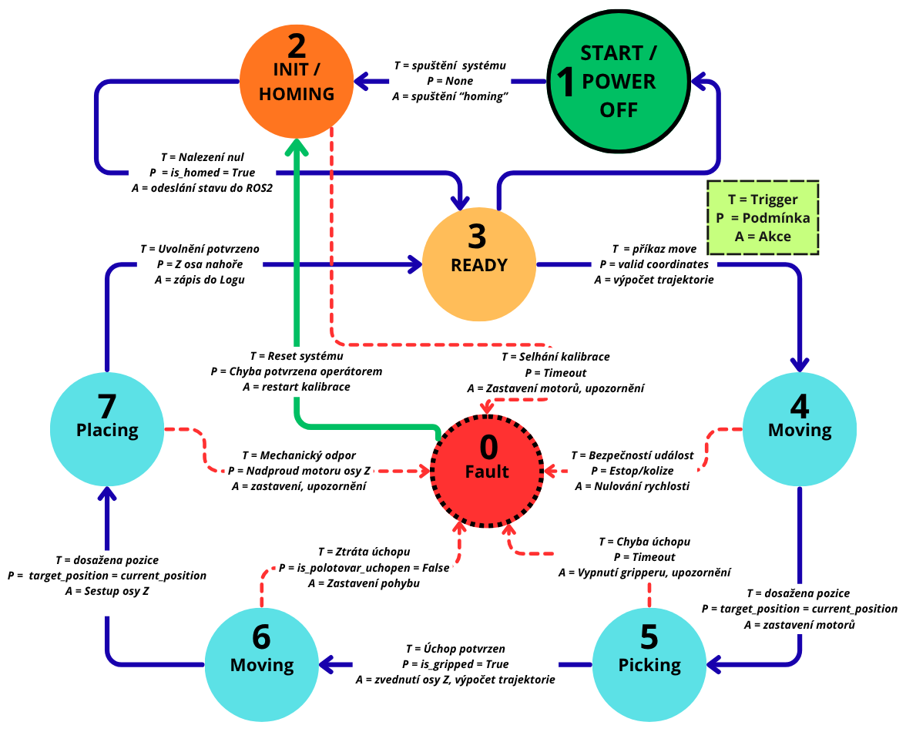
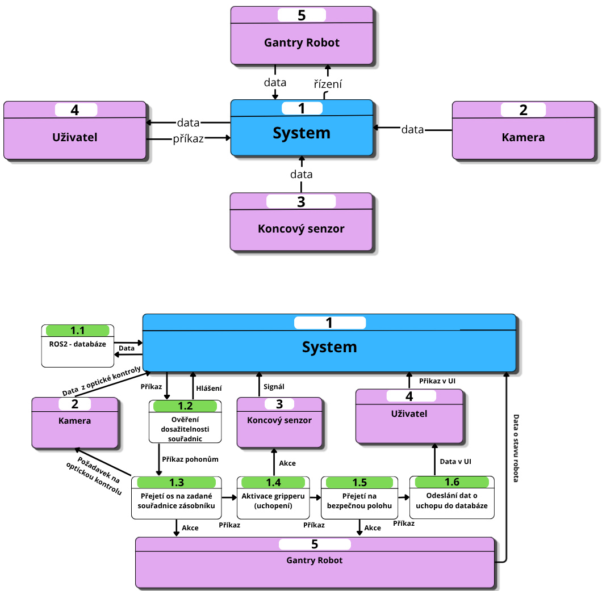
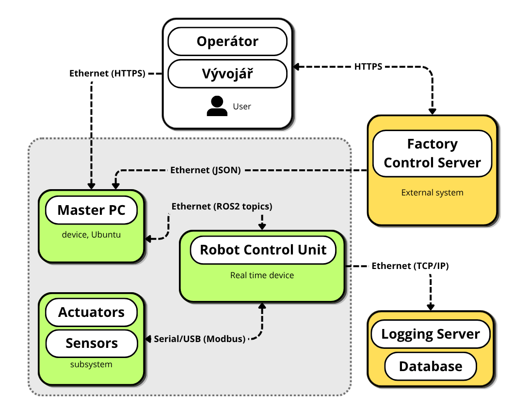

Autor: Jan Matouš
Předmět: Softwarové inženýrství
Akademický rok 2025/2026


"Úspěchem nazveme stav, kdy dojde k autonomnímu vykonání 30 cycklů bez chyby úchopu a v případě otevření klece dojde k zastavení manipulátoru do 500 ms."

Operátor - primární aktér - Účastní se běžného provozu, spouští chod a provádí vizuální kontrolu linky jak přes panel, tak přes vizuální kontrolu
Servisní technik - technická role - Údržb mechaniky, kalibrace os a dignostiky softwarovcýh chyb
Bezpečnostní technik - bezpečností role - Zodpovíva za schálení bezpečnostních limitů, konfiguraci stop stavu a revizi klece
Systémový administrátor - IT role - Správa síťové infrastruktury a verzování řídícího software
Technické i legislativní omezení:
Komunikační standardy - Komunikace mezi moduly probíhá přes standardy ROS2 zpráv
Software safety - V případě výpadku komunikace nebo překročení mezních hodnot (překročení rychlosti nad xxx mm/s) software autonomně vyvolá stop stav bez zásahu nadřazené sítě.
Reálný čas - Řídící smyčka pro plánování trajektorie běží s pevnou periodou pro zaručení stability pohybu
Legislativní normy - Návrh SW architektury musí odpovídat požadavkům normy ISO 10218 na spolehlivost logických bezpečnostních funkcí. Kód musí být verzován (Git) a dokumentován pro potřeby budoucí certifikace.
| Fáze projektu | Odpovědná role | Výstup (Artefakt) |
|---|---|---|
| Analýza a vize | Systémový architekt | Vision & Scope dokumentace, C4 diagram |
| Specifikace požadavků | Requirements Engineer | Seznam FR a NFR, Use-case model |
| Návrh a modelování | SW Inženýr | Doménový model, stavové automaty |
| Ověřování a testy | V&V Specialista | Testovací případy, V&V matice |
| Prototypování | Vývojář | ROS2 simulace, kód klíčové funkce |
Cílem je definování systému tak, aby byl jednoznačný, testovatelný a zaměřený na softwarové řízení 3-osého manipulátoru.
Model se zaměřuje na elementární (atomické) operace systému, ze kterých se skládají komplexní procesy.
Seznam elementárních případů užití:
UC_01: Inicializace (Homing) – kalibrace os
UC_02: Pohyb na souřadnice – nízkoúrovňové řízení trajektorie.
UC_03: Úchop polotovaru (Pick) – aktivace a kontrola gripperu
UC_04: Uvolnění polotovaru (Place) – deaktivace gripperu a potvrzení.
UC_05: Nouzové zastavení – prioritní přerušení SW smyčky.
další operace systému, které už nejsou součástí diagramu:
UC_06: Ověření dosažitelnosti souřadnic - ověření správnost zadaných souřadnic v porovnání s pracovním prostorem
UC_07: Odeslání dat do databáze - log informace o průběhu stavů v robotu

| ID | Požadavek | Priorita | Zdroj | Verifikace | Evidence |
|---|---|---|---|---|---|
| FR-01 | Systém musí umožnit automatickou kalibraci všech 3 os (Homing) | Vysoká | Servisní technik | Test | Konzole ROS2 (zpráva) |
| FR-02 | Pohyb (P2P): Systém musí umožnit přesun TCP na definované souřadnice X, Y, Z s přesností $\pm$ 0.1 mm. | Vysoká | Provozní scénář | Demonstrace | Porovnání cílových a aktuálních souřadnic |
| FR-03 | Systém musí aktivovat a detekovat úspěšný úchop destičky pomocí koncového senzoru | Vysoká | Provozní scénář | Test | Změna v provozním logu u gripper_status |
| FR-04 | Systém musí deaktivovat gripper a potvrdit uvolnění gripperu před odjezdem osy Z. | Vysoká | Provozní scénář | Test | Log událostí a následná změna Z souřadnic |
| FR-05 | Systém musí umožnit posuv os v servisním režimu | Nízka | Servisní technik | Test | Záznam o přijetí příkazu z ovladače (panel) |
| FR-06 | Systémově implementované softwarově mechanické limity | Vysoká | Bezpečnostní technik | Test | Chybová hláška v terminálu při pohybu mimo rozsah |
| FR-07 | Ukládání systémových dat o dokončených cyklech, chybových hlášení a stavu senzorů do logu a odesílat přes ROS2 v realtimu | Střední | Záznám výsledků | Analýza logu | soubor .log na disku s historií dat |
| NFR-01 | Systém musí přejít do bezpečného stop-stavu při detekci poruchy/červeného tlačítka do 500 ms (Failsafe). | Kritická | Bezpečnostní technik | Měření | Časový rozdíl v logu mezi chybou a zastavením motoru |
| NFR-02 | Provozuschopnost systému víc než 95 % plánované výrobní doby | Vysoká | Koordnitánor výroby | Analýza logu | Report z diagnostického modulu |
| NFR-03 | Síťová komunikace ROS2 izolována od veřejné sítě a ochráněna od neoprávných příkazů | Vysoká | Vývojář | Inspekce sítě | Konfigurační soubor firewallu |
Požadavky na rozhraní
Stop stavy a chování při poruchách
Akceptační kritéria rozhraní
| Detekce neúspěšného úchopu - navázáno na FR-03 | |
|---|---|
| Given | Robot se nachází na zásobníkem a spustil uchopovací cyklus |
| When | Koncový senzor nahlásí zmáčknutí koncového spínače indikující chybějící polotovar |
| Then | Robot přeruší cyklus, zvedne osu Z do bezpečné výšky a aktivuje alarm |
| Reakce na nouzové zastavení - navázáno na NRF-01 | |
|---|---|
| Given | Robot provádí pohyb v libovolné ose |
| When | Dojde k rozpojení bezpečnostního okruhu (tlačítko, otevření klece) |
| Then | Systém odpojí pohony a veškerý pohyb se zastaví do 500 ms |
Specifikujeme vnitřní strukturu a dynamické chování řídícího systému pro Gantry robot. Modely definují rozhraní mezi jednotlivámi softwarowými moduly a jejich interakci s okolím.
Doménový model
Doménovým modelem reprezentujeme vztahy mezi klíčovými objekty v problémové doméně. Kde systém je rozdělen na logické třídy, vztahy a datové entity.

Dynamický model: Stavový automat
Stavový automat definuje deterministické chování robota. Zajišťuje, že systém reaguje na podněty pouze v logických stavech.
Klíčovým prvkem je stav Fault, do kterého systém přechází při jakékoli anomálii. Dále systémové chování popisují přechody mezi pracovními stavy, kde každý přechod je hlídán logickou podmínkou.

Procesní model - Data Flow Diagram Vytvořen pro klíčová proces - Úchop polotovaru

Model rozhraní a nasazení
Model popisující fyzické a logické rozmístění softwarových komponent na hadrwarových uzlech. Rozdělení na vnitřní podstruktury systému a vnější entity jako například "Factory Control Server", se kterým systém komunikuje.

V&V Matice - Traceability
Pro vybrané požadavky z kapitoly 1.2
| ID | Požadavek | Metoda ověření | Specifikace ověření | Test Case ID |
|---|---|---|---|---|
| FR-01 | Homing | Zátěžový test | 10x po sobě jdoucí úspěšná kalibrace z náhodných počátečních poloh os | TC-01 |
| FR-02 | Přesnost pohybu | Měření | Najetí na 3 náhodné body v 5 opakováních, výpočet odchylky | TC-02 |
| FR-03 | Úchop | Test | 20 cyklů úchopu a zdvihu bez pádu polotovaru nebo falešné detekce uchopení | TC-03 |
| FR-06 | Soft Limity | Negativní test | 5 pokusů o zadání souřadníc mimo pracovní prostor přes ROS2 | TC-04 |
| NFR-01 | Stop stav | Časová analýza | 10x simulace chyby, změření času od logu události po zastavení příkazu motorů | TC-05 |
| NFR-02 | Uptime - 95 % | Test | 24hodinový běh v simulovaném stress-test cyklu | TC-06 |
Testovací strategie po úrovních
Pro omezení škod způsobené neodlaněným spouštěného softwaru přistoupíme k testingu víceúrovňovou simulací, ve které budeme postupně zvyšovat množinu celku robota.
Unit Testing - Testování jednotlivých funkcí (výpočet inverzní kinematiky, parsování ROS2 zpráv) bez nutnosti připojeného HW
Software in the Loop - Testování kompletního kódu v simulovaném prostředí (například Gazebo), kde pozorujeme chování robota v bezpečném prostředí.
Hardware in the Loop - Řídící algoritmus běží na Master PC, ale je připojem k realným driverům motorů bez mechanické zátěže pro otestování komunikace.
System Inert Fluid Testing - První testování stroje v prostředí lázní plněné inertní kapalinou (vodou)
System Stress Testing - Vědomé přetězování softwarové logiky v bezpečném prostředí (bez chemie)
System Endtesting - Finální testování kompletního stroje v chemickém provozu
Test Cases
| ID | Název testu | Vstupní podmínka | Očekávaný výsledek | Pass/Fail kritérium |
|---|---|---|---|---|
| TC-01 | Homing Sequence | 10x - Start systému, osy v náhodných polohách | Robot najde 3 koncové spínače a vynuluje souřadnice | isHomed == True a rozptyl nalezených nulových bodů <0,05 mm |
| TC-02 | P2P Accuracy | 5x - Příkaz pohybu na bod1, bod2, bod3 | Robot se zastaví na pozici | Max. odchylka mezi cílovou a skutečnou polohou v každém kroku <0.1 mm |
| TC-03a | Pick Succes | Polotovar v zásobníku, příkaz Pick | Koncový senzor sepne a změní stav na Gripped | is_polotovar_uchopen = True |
| TC-03b | Pic Failure (empty) | Zásobník prázdný, příkaz Pick | Po 2s timeoutu, systím nahlásí chybu a přejede do bezpečné polohy | Stav - Fault, zprává ROS2 operátorovi |
| TC-04 | Soft Limit Breach | Pokus o pohyb na "přeslimitní" souřadnice | Software odmítne vykonat pohyb dřív, než se motory pohnou | Chybová hláška v konzoli |
| TC-05 | Emergency Stop | Stisk E-stop tlačítka během pohybu | Okamžité zastavení všech os do 500 ms | Časový rozdíl v logu t<500 ms |
| TC-06 | 24 hod - Zátěžový Test | Skript s nekonečnou frontou náhodných, validních souřadnic v pracovním prostoru | Systém vykoná cykly bez pádu uzlů nebo kritického nárustu spotřeby | Systém běží minimálně 95 % testovaného času bez nutnosti restartu softwaru v simulovaném prostředí - SIF |
Plán záznamu výsledků
Pro splnění požadavků na evidenci, použijeme tyto nástroje: